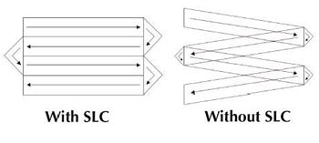

Rasterio
Geospatial Raster Data Access for Programmers
and Future Programmers
Sean Gillies @Mapbox
SciPy 2014 ∙ Austin ∙ July 9
Programming with Raster data
- What's the Mapbox Satellite team up to?
- Why Linux, GDAL, and SciPy?
- Why a new Python geospatial data library?
- What is Rasterio and how do you use it?
Mapbox Cloudless Atlas
From cloudy scenes
Declouding
- Scene selection (season and cloudiness)
- Atmospheric correction and reflectance normalization
- Score every pixel of every source image
- No cutlines
- Pixel by pixel
High scoring pixels
Low scoring pixels
Earth is a cloudy planet
- 50-70% mean cloud cover over land
- Landsat 8 doesn't yet have cloud-free imagery everywhere
- So we also use Landsat 7
Scan Line Correction

Landsat SLC-Off Imagery
- Since May 2003
- Without it we don't have enough cloudless pixels
- It complicates things
- A lot
Bands
Debanding
- Transform the image using a Fast Fourier Transform
- Locate the artifact peaks
- Remove the artifacts
- Transform the image back using an inverse transform
Solving the problems
- We have no off-the-shelf solutions
- Trial and error is involved
Cloudless Atlas Software Requirements
- Rapid prototyping and iteration
- Proven algorithms and drivers
- Ability to deploy to 100s of servers
Software stack
- 1 and 3 argue for open source
- 1 argues for a high-level language with handy multi-dimensional array syntax
- 2 argues for LAPACK (&c) and GDAL
- The fit: Linux, Python, Numpy, Scipy
GDAL Python bindings?
- Very C++ style interface
- Failure to keep SWIG and C issues in mind results in crashing programs
- We can do better
Scipy-style raster data library requirements
- Read/write ndarrays from/to data files
- Python types, protocols and idioms instead of C/C++ ones
- Free programmers from having to think about C/C++ (memory management, pointers, &c)
Rasterio's Design
- A Python package at the top
- Extension modules (using Cython) in the middle
- Fast loops, typed memoryviews, "nogil" blocks
- GDAL shared library on the bottom
Reading data
import rasterio
with rasterio.open(path) as src:
bands = [src.read_band(i) for i in src.indexes]
open() gives you a file-like dataset objectread_band() gives you a Numpy ndarray- Read windows of data with extended slice-like syntax
Writing data
kwargs = src.meta
with rasterio.open(path, 'w', **kwargs) as dst:
for i, arr in zip(dst.indexes, bands):
dst.write_band(i, arr)
- Get keyword args needed to open a dataset for writing from another dataset
write_band() takes an ndarray- You can also write to windows of a dataset
Georeferencing
Rasterio follows the lead of pyproj
>>> import rasterio
>>> src = rasterio.open('rasterio/tests/data/RGB.byte.tif')
>>> src.crs
{'units': 'm', 'zone': 18, 'ellps': 'WGS84', 'proj': 'utm', 'no_defs': True}
rasterio.features
rasterio.features.shapes() yields all the features of an array as GeoJSON-like objectsrasterio.features.rasterize() "burns" GeoJSON-like objects into an array- Dicts, iterators, tuples, ndarrays
- No datasets or layers necessary

{'coordinates': [[(71.0, 6.0), ...]], 'type': 'Polygon'}, ...
rasterio.warp
rasterio.warp.reproject() maps elements of one array to another, using cartographic projections- No datasets or layers required
- Data created in non-GIS programs can be reprojected for use with GIS programs
Conclusion
- The Mapbox Satellite team has interesting problems
- Linux, Python, Numpy, Scipy, GDAL, and Rasterio are big parts of the solutions
- Rasterio aims to make GIS data more accessible to Python programmers
- And help GIS analysts learn important Python protocols and idioms